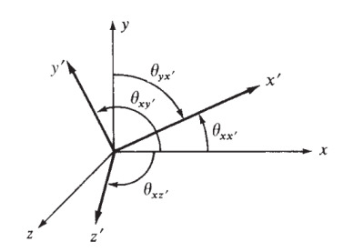
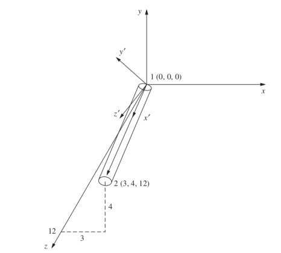

Materyel Mekaniği - 11
Üç boyutta herhangi bir yönde olabilecek bir kiriş öğesinin direngenlik matrisini bu bölümde geliştirelim [2, sf. 281]. Bunu yapabilmek için daha önce gördüğümüz eksenel, iki boyutlu kiriş, burulma direngenlik matrislerini birleştireceğiz.
İki boyuttaki kirişin mekaniği bükülme alttaki gibiydi [1],


Şimdi işaretler alttaki gibi olacak,

İki boyutlu kiriş matrisini [1] iki kez kullanacağız, ilki $x-z$ düzlemi icin, ikincisi $x-y$ düzlemi için,
$x-z$ düzlemi
$$ \frac{EI_y}{L^4} \left[\begin{array}{cccc} 12L & -6L & -12L & -6L^2 \\ & 4L^3 & 6L^2 & 2L^3 \\ & & 12L & 6L^2 \\ & & & 4L^3 \end{array}\right] \qquad (1) $$
$x-y$ düzlemi
$$ \frac{EI_y}{L^4} \left[\begin{array}{cccc} 12L & 6L & -12L & 6L^2 \\ & 4L^3 & -6L^2 & 2L^3 \\ & & 12L & -6L^2 \\ & & & 4L^3 \end{array}\right] \qquad (2) $$
Dikkat edersek $x-y$ düzleminin matrisi [1] matrisi ile aynı. $x-z$ düzlemi matrisinin bazı işaretleri farklı, bunun sebebi düzlemdeki bükülmenin sağ el kuralına göre farklı yönleri gösterebilmesi. Mesela [1]'deki
$$ m_1 = -m = -EI \frac{\mathrm{d}^2 v(0)}{\mathrm{d} x^2} = \frac{EI}{L^3} ( 6L v_1 + 4L^2 \phi_1 - 6L v_2 + 2 L^2 \phi_2 ) $$
formülünü hatırlarsak, o formülde bir uçta $m$ diğer üçta $-m$ vardı, fakat üstteki figürde $x-z$ düzlemindeki iki uçtaki $m$ değerleri aynı işarettedir, sağ el kuralını düşünürsek $x-z$'deki bükülme 1 noktasında kağıttan bize doğru gösteriyor, 2 noktasında aynı şekilde. O zaman üstteki formüldeki işaretler değişir,
$$ \Rightarrow \frac{EI}{L^3} ( -6L v_1 - 4L^2 \phi_1 + 6L v_2 - 2 L^2 \phi_2 ) $$
Bir değişim daha açılarda, üstteki formülde $\phi_1,\phi_2$ olan acılar, üç boyuttaki üstteki şekilde bunlar $\phi_{1y}$ ve $\phi_{2y}$. Bu açılar iki boyutlu durumun aksine artı yönde tam ters işaretli, tersi yönde bir yer değişim $v_1,v_2$'ye sebep oluyorlarlar, bu yüzden o işaretler de tersine dönüyor, notasyonu da düzeltince,
$$ \Rightarrow \frac{EI}{L^3} ( -6L v_1 + 4L^2 \phi_{1y} + 6L v_2 + 2 L^2 \phi_{2y} ) $$
Böylece matrisin ikinci satırında $-6,+4,+6,+2$ katsayılarını elde ediyoruz. Bu işaretlerin (1) matrisinin ikinci satırıyla aynı olduğunu görebiliriz, diğer satırlar benzer şekilde değiştiriliyorlar.
Üstdüşüm (Superposition)
Artık bahsedilen matrisleri birleştirebiliriz. Bu üstdüşümü sympy ile
otomatik olarak yapacağız, daha önce sayısal değerler için kullandığımız
expand_dataframe kodu yine kullanılabilecek, çünkü kod bir pandas
Dataframe'i baz alıyor, bu Dataframe içinde herhangi bir obje depolamak mümkün,
oraya sayılar yerine sympy sembolik matematik objeleri koyabiliriz. Bir
bonus ta elde ediyoruz, toplama işlemi sympy tipleri için önceden
tanımlıdır, yani eğer üstdüşüm sırasında çakışma olursa, sembolik objeler
birbiriyle toplanacaktır!
from sympy import symbols, pprint, latex
from sympy.matrices import Matrix
import pandas as pd, pickle
pd.set_option('display.max_columns', None)
all_vars = ['u1','v1','w1','phi1x','phi1y','phi1z',\
'u2','v2','w2','phi2x','phi2y','phi2z']
A,G,J,E,L,Iy,Iz = symbols("A,G,J,E,L,Iy,Iz")
Önce üstte bahsedilen iki düzlemi alalım,
# x-z
vars1 = ['w1','phi1y','w2','phi2y']
M1 = pd.DataFrame([[12*L, -6*L**2,-12*L,-6*L**2],
[-6*L**2,4*L**3,6*L**2,2*L**3],
[-12*L,6*L**2,12*L,6*L**2],
[-6*L**2,2*L**3,6*L**2,4*L**3]],index=vars1)
M1.columns = vars1
M1 = M1 * (E*Iy/L**4 )
# x-y
vars2 = ['v1','phi1z','v2','phi2z']
M2 = pd.DataFrame([[12*L, 6*L**2,-12*L,6*L**2],
[6*L**2,4*L**3,-6*L**2,2*L**3],
[-12*L,-6*L**2,12*L,-6*L**2],
[6*L**2,2*L**3,-6*L**2,4*L**3]],index=vars2)
M2.columns = vars2
M2 = M2 * (E*Iz/L**4 )
Şimdi [1]'deki eksenel yükleri tanımlayan makaskiriş direngenlik matrisini alalım,
# Eksenel Yuk
vars3 = ['u1','u2']
M3 = pd.DataFrame([[1,-1],[-1,1]],index=vars3)
M3.columns = vars3
M3 = M3 * (A*E/L)
[4]'te tanımladığımız burulma mekaniğinin matrisini belirtelim,
# Burulma (Torsion)
vars4 = ['phi1x','phi2x']
M4 = pd.DataFrame([[1,-1],[-1,1]],index=vars3)
M4.columns = vars4
M4 = M4 * (G*J/L)
Hepsini üstdüşüm ile birleştirelim,
import sys; sys.path.append('../phy_020_strs_08')
import dfutil
M1f = dfutil.expand_dataframe(M1,all_vars)
M2f = dfutil.expand_dataframe(M2,all_vars)
M3f = dfutil.expand_dataframe(M3,all_vars)
M4f = dfutil.expand_dataframe(M4,all_vars)
Mall = Matrix(M1f + M2f + M3f + M4f)
pickle.dump(Mall,open("Mall.pkl","wb"))
Sonuç matrisini bir dosyaya yazalım,
print (latex(Mall)[:100],'...')
\left[\begin{array}{cccccccccccc}\frac{A E}{L} & 0 & 0 & 0 & 0 & 0 & - \frac{A E}{L} & 0 ...
$$ \left[\begin{array}{cccccccccccc}\frac{A E}{L} & 0 & 0 & 0 & 0 & 0 & - \frac{A E}{L} & 0 & 0 & 0 & 0 & 0\\0 & \frac{12 E Iz}{L^{3}} & 0 & 0 & 0 & \frac{6 E Iz}{L^{2}} & 0 & - \frac{12 E Iz}{L^{3}} & 0 & 0 & 0 & \frac{6 E Iz}{L^{2}}\\0 & 0 & \frac{12 E Iy}{L^{3}} & 0 & - \frac{6 E Iy}{L^{2}} & 0 & 0 & 0 & - \frac{12 E Iy}{L^{3}} & 0 & - \frac{6 E Iy}{L^{2}} & 0\\0 & 0 & 0 & \frac{G J}{L} & 0 & 0 & 0 & 0 & 0 & - \frac{G J}{L} & 0 & 0\\0 & 0 & - \frac{6 E Iy}{L^{2}} & 0 & \frac{4 E Iy}{L} & 0 & 0 & 0 & \frac{6 E Iy}{L^{2}} & 0 & \frac{2 E Iy}{L} & 0\\0 & \frac{6 E Iz}{L^{2}} & 0 & 0 & 0 & \frac{4 E Iz}{L} & 0 & - \frac{6 E Iz}{L^{2}} & 0 & 0 & 0 & \frac{2 E Iz}{L}\\- \frac{A E}{L} & 0 & 0 & 0 & 0 & 0 & \frac{A E}{L} & 0 & 0 & 0 & 0 & 0\\0 & - \frac{12 E Iz}{L^{3}} & 0 & 0 & 0 & - \frac{6 E Iz}{L^{2}} & 0 & \frac{12 E Iz}{L^{3}} & 0 & 0 & 0 & - \frac{6 E Iz}{L^{2}}\\0 & 0 & - \frac{12 E Iy}{L^{3}} & 0 & \frac{6 E Iy}{L^{2}} & 0 & 0 & 0 & \frac{12 E Iy}{L^{3}} & 0 & \frac{6 E Iy}{L^{2}} & 0\\0 & 0 & 0 & - \frac{G J}{L} & 0 & 0 & 0 & 0 & 0 & \frac{G J}{L} & 0 & 0\\0 & 0 & - \frac{6 E Iy}{L^{2}} & 0 & \frac{2 E Iy}{L} & 0 & 0 & 0 & \frac{6 E Iy}{L^{2}} & 0 & \frac{4 E Iy}{L} & 0\\0 & \frac{6 E Iz}{L^{2}} & 0 & 0 & 0 & \frac{2 E Iz}{L} & 0 & - \frac{6 E Iz}{L^{2}} & 0 & 0 & 0 & \frac{4 E Iz}{L}\end{array}\right] $$
Bu matrisin [2, sf. 282]'deki matris ile aynı olduğunu göreceğiz.
Döndürme işlemine geldik, döndürme için bir $T$ matrisi gerekiyor ki daha önce olduğu gibi bir $T^T k' T$ işlemini yapabilelim. Bu $T$ matrisi içinde dört tane 3x3 boyutunda $\lambda$ matris bloğu olacak, $T$ köşegeni üzerinde tekrarlanacaklar, ki böylece her değişken bloğu çarpılabilsin / döndürülebilsin. Bu bloklar $(u_1,v_1,w_1)$, $(\phi_{1x},\phi_{1y},\phi_{1z})$, $(u_2,v_2,w_2)$, $(\phi_{2x},\phi_{2y},\phi_{2z})$ [2, sf. 282].
$$ T = \left[\begin{array}{cccc} [\lambda] & & & \\ & [\lambda] & & \\ & & [\lambda] & \\ & & & [\lambda] \end{array}\right] $$
Her $\lambda$ matrisi "yön kosinüsleri" denen değerleri içeriyor olacak, bu kavramın detayları için bkz [6, sf. 73], [5, sf. 224], özet olarak tarif etmek gerekirse bir vektörün ya da yeni kordinat sisteminin yeni ekseninin, referans bir diğer ekseni ile olan açısının kosinüsü olarak görebiliriz.

Eğer eksen değişimi, transformasyonunu hesaplıyorsak $y$ ekseninin yeni $x'$ ekseni ile oluşturduğu açı $\cos_{yx'}$ olarak gösterilebilir, ya da kısaca $C_{yx'}$, tüm bu kombinasyonlar için elde edilen açılar bir matris içinde $\lambda$'da yer alır,
$$ \lambda = \left[\begin{array}{ccc} C_{xx'} & C_{yx'} & C_{zx'} \\ C_{xy'} & C_{yy'} & C_{zy'} \\ C_{xz'} & C_{yz'} & C_{zz'} \end{array}\right] $$
Sonlu Öğeler (Finite Element) bu hesap şu şekilde uygulanır, FEM problemlerinde genellikle yapılan bir kiriş parçası transform edilmiş $x'$ ekseni kabul edilir, ve geri kalan $\lambda$ değerleri buna göre doldurulur. Bu durumda kirişin uç ve baş noktasını kullanarak $x'$ ile oluşan açıları şöyle bulabiliriz,
$$ \cos_{xx'} = \frac{x_2 - x_1}{L} = l $$
$$ \cos_{yx'} = \frac{y_2 - y_1}{L} = m $$
$$ \cos_{zx'} = \frac{z_2 - z_1}{L} = n $$
ki kirişin son noktası $x_2,y_2,z_2$, baş noktası $x_1,y_1,z_1$, uzunluk $L$.
Kiriş bazlı yeni eksen oluştururken bir kez $x'$ elde ettikten sonra diğer eksenleri ona göre bulabiliriz, diğer herhangi bir vektörle oluşturulan düzleme dik olan yeni bir vektörü $y'$ için kullanabilirdik mesela, [2]'de yapılan $x'$ ile $z$ ekseninin çapraz çarpımını almaktır. Bilindiği gibi iki vektöre dikgen üçüncü bir vektör çapraz çarpım ile hesaplanır, böylece $x'$ eksenine dikgen bir $y'$ elde etmiş oluruz, sonra $x'$ ile $y'$ ekseninin bir çapraz çarpımı daha alınarak her iki eksene dikgen üçüncü eksen $z'$ bulunabilir. Bu hesapla elde edilen $x',y',z'$ bir kordinat ekseninin sahip olması gerekli tüm koşulları yerine getiriyor.
Biraz önceki semboller üzerinde görelim, $i,j,k$ birim vektörler, notasyonda genellikle $\mathbf{i},\mathbf{j},\mathbf{k}$ olarak gösterilirler.
$$ z \times x' = y' = \frac{1}{D} \left[\begin{array}{ccc} i & j & k \\ 0 & 0 & 1 \\ l & m & n \end{array}\right] $$
$$ y' = - \frac{m}{D} i + \frac{l}{D} j $$
$$ D = (l^2 + m^2)^{1/2} $$
Simdi $z'$ ekseni,
$$ z' = x' \times y' = \frac{1}{D} \left[\begin{array}{ccc} i & j & k \\ l & m & n \\ -m & l & 0 \end{array}\right] $$
$$ z' = -\frac{ln}{D} i - \frac{mn}{D} j + D k $$
Sonuçları bir araya koyarsak,
$$ \lambda = \left[\begin{array}{ccc} l & m & n \\ -\dfrac{m}{D} & \dfrac{l}{D} & 0 \\ -\dfrac{ln}{D} & -\dfrac{mn}{D} & D \end{array}\right] $$
Üstteki matris bir vektörü yerel kordinat sisteminden global kordinat sistemine çevirebilir. $T$ içinde üstteki matrisleri kullanırız, ve $T^T k' T$ hesabını yaparız.
Problem 5.7

Üstteki şekil için gereken $\lambda$ matrisini bulun.
Çözüm
Önce kiriş uzunluğunu bulalım.
np.sqrt(3**2 + 4**2 + 12**2)
Out[1]: 13.0
Şimdi uzunluğu kullanarak $x'$ eksenini bulalım, daha önce bahsedildiği gibi bu eksenin çubuğun bir ucundan başlayıp onunla aynı yönü gösterdiği kabul edilir. Bu değerlere $l_x,l_y,l_z$ diyelim, $\lambda$ matrisinin ilk satırı bu değerler,
$$ l_x = \frac{x_2 - x_1}{L} = \frac{3 = 0}{13} = \frac{3}{13} $$
$$ m_x = \frac{y_2 - y_1}{L} = \frac{4-0}{13} = \frac{4}{13} $$
$$ n_x = \frac{z_2 - z_1}{L} = \frac{12 = 0}{13} = \frac{12}{13} $$
Şimdi $D$ hesabını yapabiliriz,
$$ D = (l_x^2 + m_x^2)^{1/2} = \left[ \left(\frac{3}{13}\right)^2 + \left(\frac{4}{13}\right)^2 \right]^{1/2} = \frac{5}{13} $$
$y'$ eksenini hesaplamak için
$$ l_y = -\frac{m}{D} = -\frac{4}{5} $$
$$ m_y = \frac{l}{D} = \frac{3}{5} $$
$$ n_y = 0 $$
$z'$ ekseni
$$ l_z = -\frac{l_x n_x}{D} = \frac{-\frac{3}{13} \frac{12}{13}}{\frac{5}{13}} = - \frac{36}{65} $$
$$ m_z = -\frac{m_x n_x}{D} = \frac{-\frac{4}{13} \frac{12}{13}}{\frac{5}{13}} = -\frac{48}{65} $$
$$ n_z = D = \frac{5}{13} $$
Tek bir matriste üstteki tüm değerleri gösterelim,
$$ \lambda = \left[\begin{array}{ccc} \frac{3}{13} & \frac{4}{13} & \frac{12}{13} \\ -\frac{4}{5} & \frac{3}{5} & 0 \\ -\frac{36}{65} & -\frac{48}{65} & \frac{5}{13} \end{array}\right] $$
Problem 5.8
from sympy.matrices import Matrix
from sympy import symbols
import pickle
A,G,J,E,L,Iy,Iz = symbols("A,G,J,E,L,Iy,Iz")
Mall = pickle.load(open('Mall.pkl','rb'))
D = {E: 30000, G: 10000, J:50, Iy:100, Iz:100, A:10, L:100}
M = Mall.subs(D)
print (latex(M)[:100], '..')
\left[\begin{array}{cccccccccccc}3000 & 0 & 0 & 0 & 0 & 0 & -3000 & 0 & 0 & 0 & 0 ..
$$ {\scriptsize \left[\begin{array}{cccccccccccc}3000 & 0 & 0 & 0 & 0 & 0 & -3000 & 0 & 0 & 0 & 0 & 0\\0 & 36 & 0 & 0 & 0 & 1800 & 0 & -36 & 0 & 0 & 0 & 1800\\0 & 0 & 36 & 0 & -1800 & 0 & 0 & 0 & -36 & 0 & -1800 & 0\\0 & 0 & 0 & 5000 & 0 & 0 & 0 & 0 & 0 & -5000 & 0 & 0\\0 & 0 & -1800 & 0 & 120000 & 0 & 0 & 0 & 1800 & 0 & 60000 & 0\\0 & 1800 & 0 & 0 & 0 & 120000 & 0 & -1800 & 0 & 0 & 0 & 60000\\-3000 & 0 & 0 & 0 & 0 & 0 & 3000 & 0 & 0 & 0 & 0 & 0\\0 & -36 & 0 & 0 & 0 & -1800 & 0 & 36 & 0 & 0 & 0 & -1800\\0 & 0 & -36 & 0 & 1800 & 0 & 0 & 0 & 36 & 0 & 1800 & 0\\0 & 0 & 0 & -5000 & 0 & 0 & 0 & 0 & 0 & 5000 & 0 & 0\\0 & 0 & -1800 & 0 & 60000 & 0 & 0 & 0 & 1800 & 0 & 120000 & 0\\0 & 1800 & 0 & 0 & 0 & 60000 & 0 & -1800 & 0 & 0 & 0 & 120000\end{array}\right] } $$
[devam edecek]
Kaynaklar
[1] Bayramlı, Fizik, Materyel Mekaniği 7
[2] Logan, A First Course in the Finite Element Method, 6th Ed
[3] Witt Concepts and Apps of FEM
[4] Bayramlı, Fizik, Materyel Mekaniği 9
[5] Dunn, 3D Math Primer for Graphics and Game Development
[6] Stasa, Applied Finite Element Analysis for Engineers
Yukarı